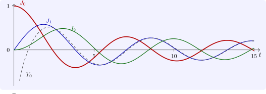

8.3 Bessel functions
Bessel’s equation of order \(\nu \geq 0\), \[ t^2y'' + ty' + (t^2 - \nu ^2)y = 0 , \] arises from the Laplacian in polar and cylindrical coordinates: vibrations of a drum, heat flow in a cylinder, electromagnetic waves in a fibre. At \(t = 0\), \(P_0 = 1\), \(Q_0 = -\nu ^2\), so \(F(r) = r^2 - \nu ^2\), with roots \(\pm \nu \).
- (i)
- The Frobenius solution with \(r = \nu \), normalised, is the Bessel function of the first kind \[ J_\nu (t) = \sum _{k=0}^\infty \frac {(-1)^k}{k!\,\Gamma (k + \nu + 1)}\Bigl (\frac t2\Bigr )^{2k+\nu } , \] which converges for all \(t\).
- (ii)
- If \(\nu \) is not an integer, \(J_\nu \) and \(J_{-\nu }\) are independent solutions. If \(\nu = n\) is an integer, \(J_{-n} = (-1)^nJ_n\), and a second solution, the Bessel function of the second kind \(Y_n\), contains \(J_n(t)\log t\) and is unbounded as \(t \to 0\).
- (iii)
- \(\frac {d}{dt}\bigl (t^\nu J_\nu \bigr ) = t^\nu J_{\nu -1}\), \(\frac {d}{dt}\bigl (t^{-\nu }J_\nu \bigr ) = -t^{-\nu }J_{\nu +1}\), and hence \(J_{\nu -1} + J_{\nu +1} = \frac {2\nu }{t}J_\nu \).
- (iv)
- \(J_{1/2}(t) = \sqrt {\frac {2}{\pi t}}\sin t\) and \(J_{-1/2}(t) = \sqrt {\frac {2}{\pi t}}\cos t\).
- (v)
- For integer \(n\), \(\exp \bigl (\frac t2(z - z^{-1})\bigr ) = \sum _{n=-\infty }^\infty J_n(t)z^n\) for \(z \neq 0\) (the generating function).
Proof. (i) With \(P_k = 0\) for \(k \geq 1\) and \(Q_2 = 1\), the recursion of Theorem 8.2.2 becomes \(F(\nu + k)a_k = -a_{k-2}\), that is \(k(k + 2\nu )a_k = -a_{k-2}\), with \(a_1 = 0\). So only even coefficients survive, \(a_{2k} = -a_{2k-2}/(4k(k + \nu ))\), and with \(a_0 = 1/(2^\nu \Gamma (\nu + 1))\) and \(\Gamma (z + 1) = z\Gamma (z)\) this gives the series. The ratio of successive terms tends to zero, so it converges everywhere. (ii) For non-integer \(\nu \) the same calculation with \(-\nu \) works, since \(k(k - 2\nu ) \neq 0\), and the two solutions behave like \(t^\nu \) and \(t^{-\nu }\) at \(0\), so they are independent. For \(\nu = n\), \(1/\Gamma (k - n + 1) = 0\) for \(k < n\), the series for \(J_{-n}\) starts at \(k = n\), and re-indexing \(k = j + n\) gives \((-1)^nJ_n\); the second solution comes from case (ii) or (iii) of Theorem 8.2.2, with a logarithm. (iii) Differentiate the series of \(t^\nu J_\nu = \sum _k\frac {(-1)^kt^{2k+2\nu }}{2^{2k+\nu }k!\,\Gamma (k + \nu + 1)}\) term by term and use \((2k + 2\nu )/\Gamma (k + \nu + 1) = 2/\Gamma (k + \nu )\); the second identity is similar, and expanding both derivatives and adding gives the recurrence. (iv) With \(\Gamma (k + \frac 32) = \frac {(2k + 1)!}{4^kk!}\cdot \frac {\sqrt \pi }{2}\), the series becomes \(\sqrt {\frac 2{\pi t}}\sum _k\frac {(-1)^kt^{2k+1}}{(2k + 1)!}\); the other is similar. (v) Multiply \(e^{tz/2} = \sum _j\frac {(tz/2)^j}{j!}\) by \(e^{-t/(2z)} = \sum _k\frac {(-t/(2z))^k}{k!}\), and collect the coefficient of \(z^n\), \(n \geq 0\): it is \(\sum _k\frac {(-1)^k(t/2)^{n+2k}}{(n + k)!\,k!} = J_n(t)\). □
For large \(t\), \(J_\nu (t) \approx \sqrt {\frac {2}{\pi t}}\cos \bigl (t - \frac {\nu \pi }2 - \frac \pi 4\bigr )\): Bessel functions oscillate like cosines with an amplitude decaying like \(t^{-1/2}\), and the spacing of their zeros tends to \(\pi \) (Figure 11). The zeros \(j_{\nu ,k}\) determine the frequencies of a vibrating circular drum, which are not integer multiples of a fundamental: this is why a drum, unlike a string, does not sound a musical note.

Questions on this section
Stuck on something here? Ask below and it stays attached to this topic.